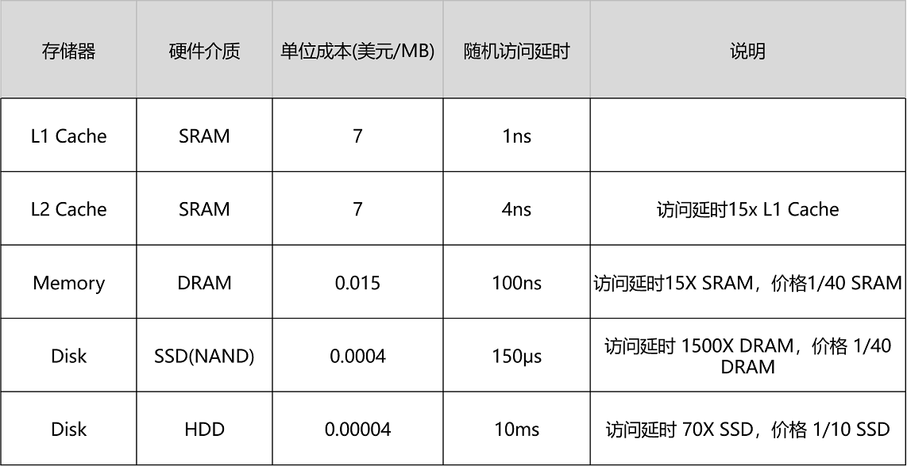

- 00 开篇词 为什么你需要学习计算机组成原理？.md.html
- 01 冯·诺依曼体系结构：计算机组成的金字塔.md.html
- 02 给你一张知识地图，计算机组成原理应该这么学.md.html
- 03 通过你的CPU主频，我们来谈谈“性能”究竟是什么？.md.html
- 04 穿越功耗墙，我们该从哪些方面提升“性能”？.md.html
- 05 计算机指令：让我们试试用纸带编程.md.html
- 06 指令跳转：原来if...else就是goto.md.html
- 07 函数调用：为什么会发生stack overflow？.md.html
- 08 ELF和静态链接：为什么程序无法同时在Linux和Windows下运行？.md.html
- 09 程序装载：“640K内存”真的不够用么？.md.html
- 10 动态链接：程序内部的“共享单车”.md.html
- 11 二进制编码：“手持两把锟斤拷，口中疾呼烫烫烫”？.md.html
- 12 理解电路：从电报机到门电路，我们如何做到“千里传信”？.md.html
- 13 加法器：如何像搭乐高一样搭电路（上）？.md.html
- 14 乘法器：如何像搭乐高一样搭电路（下）？.md.html
- 15 浮点数和定点数（上）：怎么用有限的Bit表示尽可能多的信息？.md.html
- 16 浮点数和定点数（下）：深入理解浮点数到底有什么用？.md.html
- 17 建立数据通路（上）：指令加运算=CPU.md.html
- 18 建立数据通路（中）：指令加运算=CPU.md.html
- 19 建立数据通路（下）：指令加运算=CPU.md.html
- 20 面向流水线的指令设计（上）：一心多用的现代CPU.md.html
- 21 面向流水线的指令设计（下）：奔腾4是怎么失败的？.md.html
- 22 冒险和预测（一）：hazard是“危”也是“机”.md.html
- 23 冒险和预测（二）：流水线里的接力赛.md.html
- 24 冒险和预测（三）：CPU里的“线程池”.md.html
- 25 冒险和预测（四）：今天下雨了，明天还会下雨么？.md.html
- 26 Superscalar和VLIW：如何让CPU的吞吐率超过1？.md.html
- 27 SIMD：如何加速矩阵乘法？.md.html
- 28 异常和中断：程序出错了怎么办？.md.html
- 29 CISC和RISC：为什么手机芯片都是ARM？.md.html
- 30 GPU（上）：为什么玩游戏需要使用GPU？.md.html
- 31 GPU（下）：为什么深度学习需要使用GPU？.md.html
- 32 FPGA、ASIC和TPU（上）：计算机体系结构的黄金时代.md.html
- 33 解读TPU：设计和拆解一块ASIC芯片.md.html
- 34 理解虚拟机：你在云上拿到的计算机是什么样的？.md.html
- 35 存储器层次结构全景：数据存储的大金字塔长什么样？.md.html
- 36 局部性原理：数据库性能跟不上，加个缓存就好了？.md.html
- 37 理解CPU Cache（上）：“4毫秒”究竟值多少钱？.md.html
- 38 高速缓存（下）：你确定你的数据更新了么？.md.html
- 39 MESI协议：如何让多核CPU的高速缓存保持一致？.md.html
- 40 理解内存（上）：虚拟内存和内存保护是什么？.md.html
- 41 理解内存（下）：解析TLB和内存保护.md.html
- 42 总线：计算机内部的高速公路.md.html
- 43 输入输出设备：我们并不是只能用灯泡显示“0”和“1”.md.html
- 44 理解IO_WAIT：IO性能到底是怎么回事儿？.md.html
- 45 机械硬盘：Google早期用过的“黑科技”.md.html
- 46 SSD硬盘（上）：如何完成性能优化的KPI？.md.html
- 47 SSD硬盘（下）：如何完成性能优化的KPI？.md.html
- 48 DMA：为什么Kafka这么快？.md.html
- 49 数据完整性（上）：硬件坏了怎么办？.md.html
- 50 数据完整性（下）：如何还原犯罪现场？.md.html
- 51 分布式计算：如果所有人的大脑都联网会怎样？.md.html
- 52 设计大型DMP系统（上）：MongoDB并不是什么灵丹妙药.md.html
- 53 设计大型DMP系统（下）：SSD拯救了所有的DBA.md.html
- 54 理解Disruptor（上）：带你体会CPU高速缓存的风驰电掣.md.html
- 55 理解Disruptor（下）：不需要换挡和踩刹车的CPU，有多快？.md.html
- 结束语 知也无涯，愿你也享受发现的乐趣.md.html
- 捐赠
36 局部性原理：数据库性能跟不上，加个缓存就好了？
平时进行服务端软件开发的时候，我们通常会把数据存储在数据库里。而服务端系统遇到的第一个性能瓶颈，往往就发生在访问数据库的时候。这个时候，大部分工程师和架构师会拿出一种叫作“缓存”的武器，通过使用 Redis 或者 Memcache 这样的开源软件，在数据库前面提供一层缓存的数据，来缓解数据库面临的压力，提升服务端的程序性能。
在数据库前添加数据缓存是常见的性能优化方式
那么，不知道你有没有想过，这种添加缓存的策略一定是有效的吗？或者说，这种策略在什么情况下是有效的呢？如果从理论角度去分析，添加缓存一定是我们的最佳策略么？进一步地，如果我们对于访问性能的要求非常高，希望数据在 1 毫秒，乃至 100 微妙内完成处理，我们还能用这个添加缓存的策略么？
理解局部性原理
我们先来回顾一下，上一讲的这张不同存储器的性能和价目表。可以看到，不同的存储器设备之间，访问速度、价格和容量都有几十乃至上千倍的差异。

以上一讲的 Intel 8265U 的 CPU 为例，它的 L1 Cache 只有 256K，L2 Cache 有个 1MB，L3 Cache 有 12MB。一共 13MB 的存储空间，如果按照 7 美元 /1MB 的价格计算，就要 91 美元。
我们的内存有 8GB，容量是 CPU Cache 的 600 多倍，按照表上的价格差不多就是 120 美元。如果按照今天京东上的价格，恐怕不到 40 美元。128G 的 SSD 和 1T 的 HDD，现在的价格加起来也不会超过 100 美元。虽然容量是内存的 16 倍乃至 128 倍，但是它们的访问速度却不到内存的 1/1000。
性能和价格的巨大差异，给我们工程师带来了一个挑战：我们能不能既享受 CPU Cache 的速度，又享受内存、硬盘巨大的容量和低廉的价格呢？你可以停下来自己思考一下，或者点击文章右上方的“请朋友读”，邀请你的朋友一起来思考这个问题。然后，再一起听我的讲解。
好了，现在我公布答案。想要同时享受到这三点，前辈们已经探索出了答案，那就是，存储器中数据的局部性原理（Principle of Locality）。我们可以利用这个局部性原理，来制定管理和访问数据的策略。这个局部性原理包括时间局部性（temporal locality）和空间局部性（spatial locality）这两种策略。
我们先来看时间局部性。这个策略是说，如果一个数据被访问了，那么它在短时间内还会被再次访问。这么看这个策略有点奇怪是吧？我用一个简单的例子给你解释下，你一下就能明白了。
比如说，《哈利波特与魔法石》这本小说，我今天读了一会儿，没读完，明天还会继续读。同理，在一个电子商务型系统中，如果一个用户打开了 App，看到了首屏。我们推断他应该很快还会再次访问网站的其他内容或者页面，我们就将这个用户的个人信息，从存储在硬盘的数据库读取到内存的缓存中来。这利用的就是时间局部性。
同一份数据在短时间内会反复多次被访问
我们再来看空间局部性。这个策略是说，如果一个数据被访问了，那么和它相邻的数据也很快会被访问。
我们还拿刚才读《哈利波特与魔法石》的例子来说。我读完了这本书之后，感觉这书不错，所以就会借阅整套“哈利波特”。这就好比我们的程序，在访问了数组的首项之后，多半会循环访问它的下一项。因为，在存储数据的时候，数组内的多项数据会存储在相邻的位置。这就好比图书馆会把“哈利波特”系列放在一个书架上，摆放在一起，加载的时候，也会一并加载。我们去图书馆借书，往往会一次性把 7 本都借回来。
相邻的数据会被连续访问
有了时间局部性和空间局部性，我们不用再把所有数据都放在内存里，也不用都放在 HDD 硬盘上，而是把访问次数多的数据，放在贵但是快一点的存储器里，把访问次数少的数据，放在慢但是大一点的存储器里。这样组合使用内存、SSD 硬盘以及 HDD 硬盘，使得我们可以用最低的成本提供实际所需要的数据存储、管理和访问的需求。
如何花最少的钱，装下亚马逊的所有商品？
了解了局部性原理，下面我用一些真实世界中的数据举个例子，带你做个小小的思维体操，来看一看通过局部性原理，利用不同层次存储器的组合，究竟会有什么样的好处。
我们现在要提供一个亚马逊这样的电商网站。我们假设里面有 6 亿件商品，如果每件商品需要 4MB 的存储空间（考虑到商品图片的话，4MB 已经是一个相对较小的估计了），那么一共需要 2400TB（ = 6 亿 × 4MB）的数据存储。
如果我们把数据都放在内存里面，那就需要 3600 万美元（ = 2400TB/1MB × 0.015 美元 = 3600 万美元）。但是，这 6 亿件商品中，不是每一件商品都会被经常访问。比如说，有 Kindle 电子书这样的热销商品，也一定有基本无人问津的商品，比如偏门的缅甸语词典。
如果我们只在内存里放前 1% 的热门商品，也就是 600 万件热门商品，而把剩下的商品，放在机械式的 HDD 硬盘上，那么，我们需要的存储成本就下降到 45.6 万美元（ = 3600 万美元 × 1% + 2400TB / 1MB × 0.00004 美元），是原来成本的 1.3% 左右。
这里我们用的就是时间局部性。我们把有用户访问过的数据，加载到内存中，一旦内存里面放不下了，我们就把最长时间没有在内存中被访问过的数据，从内存中移走，这个其实就是我们常用的LRU（Least Recently Used）缓存算法。热门商品被访问得多，就会始终被保留在内存里，而冷门商品被访问得少，就只存放在 HDD 硬盘上，数据的读取也都是直接访问硬盘。即使加载到内存中，也会很快被移除。越是热门的商品，越容易在内存中找到，也就更好地利用了内存的随机访问性能。
那么，只放 600 万件商品真的可以满足我们实际的线上服务请求吗？这个就要看 LRU 缓存策略的缓存命中率（Hit Rate/Hit Ratio）了，也就是访问的数据中，可以在我们设置的内存缓存中找到的，占有多大比例。
内存的随机访问请求需要 100ns。这也就意味着，在极限情况下，内存可以支持 1000 万次随机访问。我们用了 24TB 内存，如果 8G 一条的话，意味着有 3000 条内存，可以支持每秒 300 亿次（ = 24TB/8GB × 1s/100ns）访问。以亚马逊 2017 年 3 亿的用户数来看，我们估算每天的活跃用户为 1 亿，这 1 亿用户每人平均会访问 100 个商品，那么平均每秒访问的商品数量，就是 12 万次。
但是如果数据没有命中内存，那么对应的数据请求就要访问到 HDD 磁盘了。刚才的图表中，我写了，一块 HDD 硬盘只能支撑每秒 100 次的随机访问，2400TB 的数据，以 4TB 一块磁盘来计算，有 600 块磁盘，也就是能支撑每秒 6 万次（ = 2400TB/4TB × 1s/10ms ）的随机访问。
这就意味着，所有的商品访问请求，都直接到了 HDD 磁盘，HDD 磁盘支撑不了这样的压力。我们至少要 50% 的缓存命中率，HDD 磁盘才能支撑对应的访问次数。不然的话，我们要么选择添加更多数量的 HDD 硬盘，做到每秒 12 万次的随机访问，或者将 HDD 替换成 SSD 硬盘，让单个硬盘可以支持更多的随机访问请求。
当然，这里我们只是一个简单的估算。在实际的应用程序中，查看一个商品的数据可能意味着不止一次的随机内存或者随机磁盘的访问。对应的数据存储空间也不止要考虑数据，还需要考虑维护数据结构的空间，而缓存的命中率和访问请求也要考虑均值和峰值的问题。
通过这个估算过程，你需要理解，如何进行存储器的硬件规划。你需要考虑硬件的成本、访问的数据量以及访问的数据分布，然后根据这些数据的估算，来组合不同的存储器，能用尽可能低的成本支撑所需要的服务器压力。而当你用上了数据访问的局部性原理，组合起了多种存储器，你也就理解了怎么基于存储器层次结构，来进行硬件规划了。
总结延伸
这一讲，我们讲解了计算机存储器层次结构中最重要的一个优化思路，就是局部性原理。
在实际的计算机日常的开发和应用中，我们对于数据的访问总是会存在一定的局部性。有时候，这个局部性是时间局部性，就是我们最近访问过的数据还会被反复访问。有时候，这个局部性是空间局部性，就是我们最近访问过数据附近的数据很快会被访问到。
而局部性的存在，使得我们可以在应用开发中使用缓存这个有利的武器。比如，通过将热点数据加载并保留在速度更快的存储设备里面，我们可以用更低的成本来支撑服务器。
通过亚马逊这个例子，我们可以看到，我们可以通过快速估算的方式，来判断这个添加缓存的策略是否能够满足我们的需求，以及在估算的服务器负载的情况下，需要规划多少硬件设备。这个“估算 + 规划”的能力，是每一个期望成长为架构师的工程师，必须掌握的能力。
最后，回到这一讲的开头，我问了你这样一个问题，在遇到性能问题，特别是访问存储器的性能问题的时候，是否可以简单地添加一层数据缓存就能让问题迎刃而解呢？今天这个亚马逊网站商品数据的例子，似乎给了我们一个“Yes”的答案。那么，这个答案是否放之四海皆准呢？后面的几讲，我们会深入各种应用场景，进一步来回答这个问题。
推荐阅读
想要仔细了解各种存储器和局部性原理，你还是可以去读一读教科书。《计算机组成与设计：硬件 / 软件接口》的 5.1～5.2 小节，是一个很好的阅读材料。
© 2019 - 2023 Liangliang Lee. Powered by gin and hexo-theme-book.